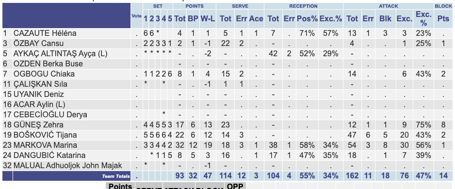
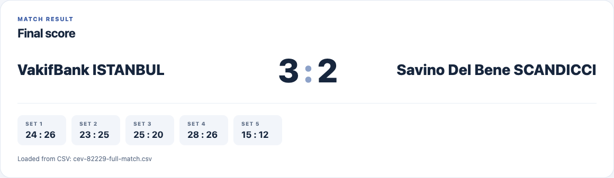
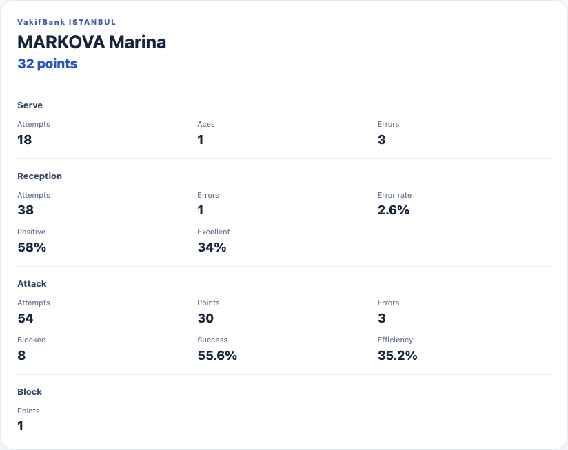

Can you spot Marina Markova?

There she is. How many of her attacks scored?
Open the same match.

Load the February sample, then select Markova under Players.
Marina Markova
32total points
30 of 54attacks scored
55.6%attack success

What happened on 54 attacks?
30 scored points. That’s 55.6% of her attempts.
- Scored
- 30
- Stayed in play
- 13
- Blocked
- 8
- Errors
- 3
Find the player behind the score.
Open the browser demo and load the February sample.